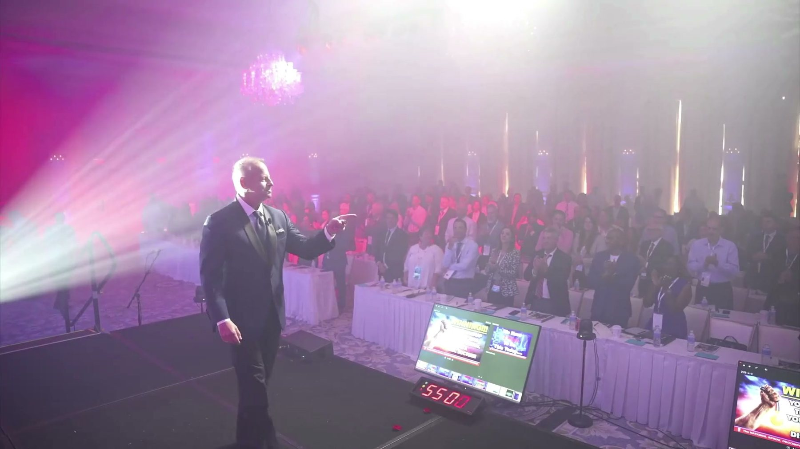
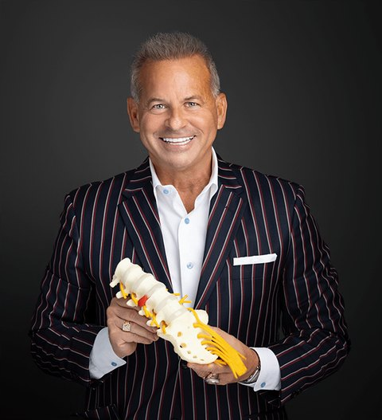

National Spinal Decompression LIVE

The Chiro Event
Two doctors who built the practices first, then taught them.
Between them, eleven multi-million-dollar clinics before they ever ran a seminar. Partners for more than three decades.

Dr. Eric Kaplan, D.C.
Co-founder, DISC Centers of America. Co-chair, International Medical Advisory Board on Spinal Decompression.

Dr. Perry Bard, D.C.
Co-founder, DISC Centers of America. Life University alumnus. Host, The Physician Spotlight Radio Show.
Each has a son in practice: Dr. Jason Kaplan at Wellington Disc Center and Dr. Devin Bard at Palm Beach Disc Center.
Their full stories
 Dr. Susan Cunico
Dr. Susan Cunico Dr. Tom Ferrigno
Dr. Tom Ferrigno